The visibility gap
Some of the most consequential moments in healthcare happen in conversation.
From conversations to intelligence
Scroll to explore~1 in 4
malpractice cases involve breakdowns in communication with patients and families
SOURCE: Candello, Malpractice Risks in Communication Failures. (2025)
Some of the most consequential moments in healthcare happen in conversation.
Downstream signals offer indirect, often retrospective views.
Records around the encounter are an incomplete picture of what transpired.
Yet, the conversation itself remains difficult to examine systematically.
Decision communication intelligence
We identify discrete treatment decisions within clinical conversation transcripts generated by existing ambient systems and decompose them into constituent elements linked to supporting dialogue.
Our structured, evidence-linked representation establishes a consistent basis for examining the content, structure, and quality of decision communication across similar decisions.

Detect recurring communication gaps and variation.
Inform targeted feedback and communication improvement.
Explore links between communication patterns, patient experience, and risk.
We are a physician, an operator, and a technologist, each with firsthand experience across care delivery and the systems that support it.
At the center of our work is the belief that conversations shape care quality and are strengthened by learning from them.
Our mission is to make clinical conversations a systematic source of organizational insight through technology that is clinically grounded, analytically rigorous, and thoughtfully designed for the realities of healthcare.
Connect with us to explore what visibility into clinical communication could mean for your organization.